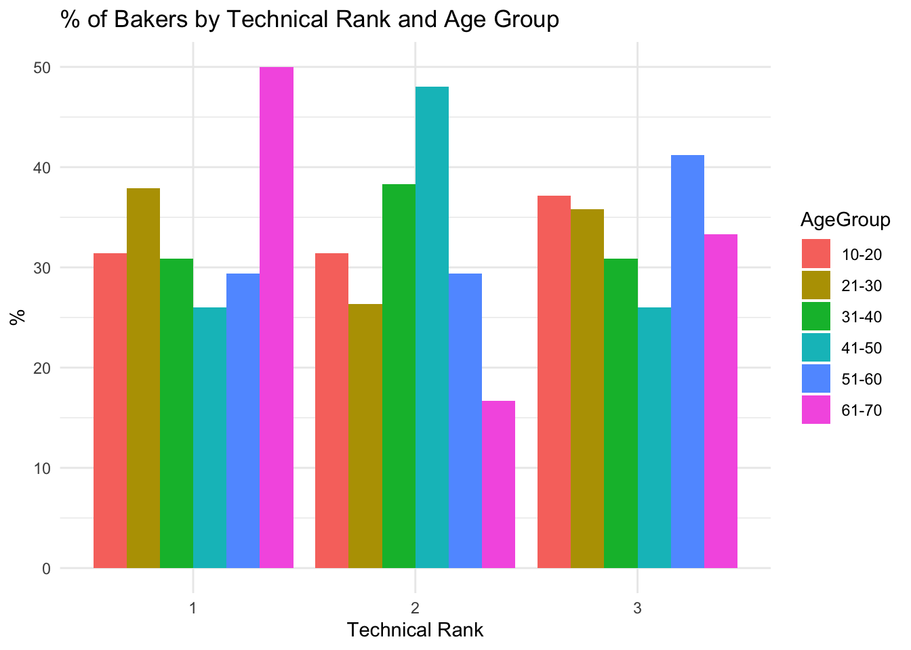
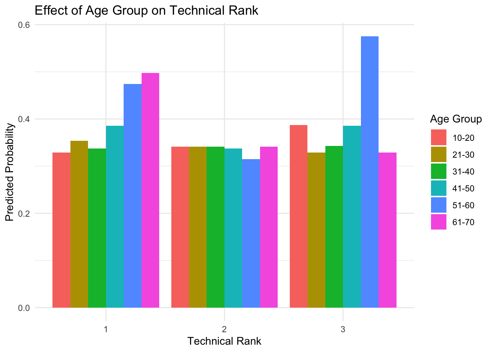
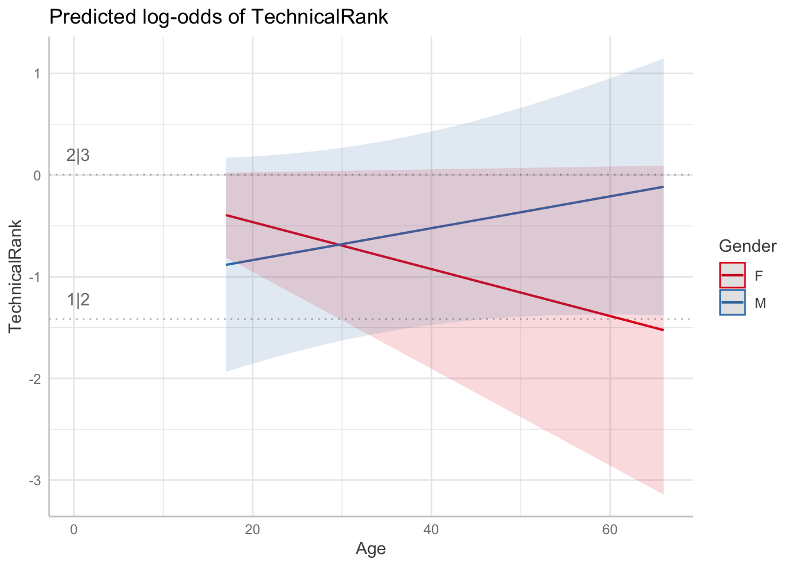
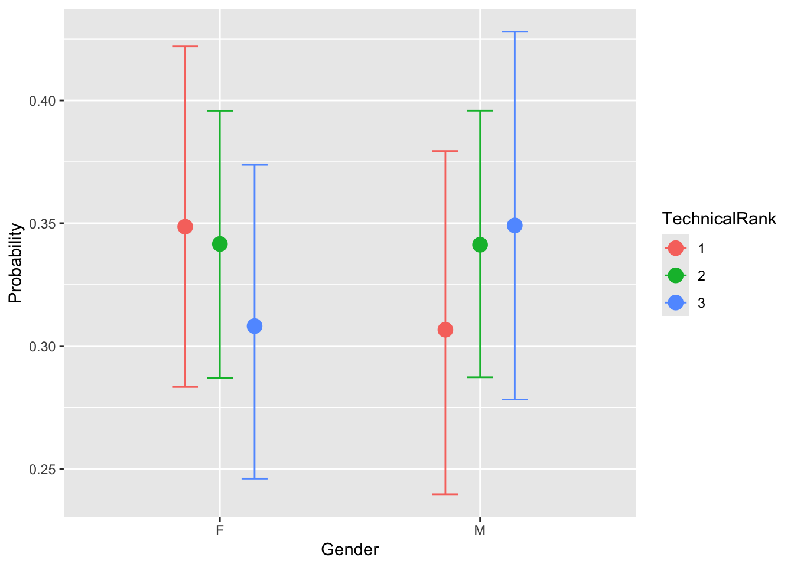
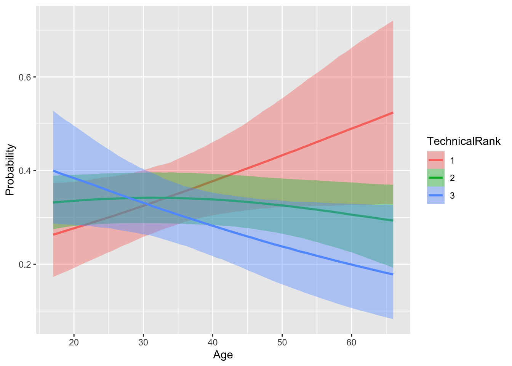
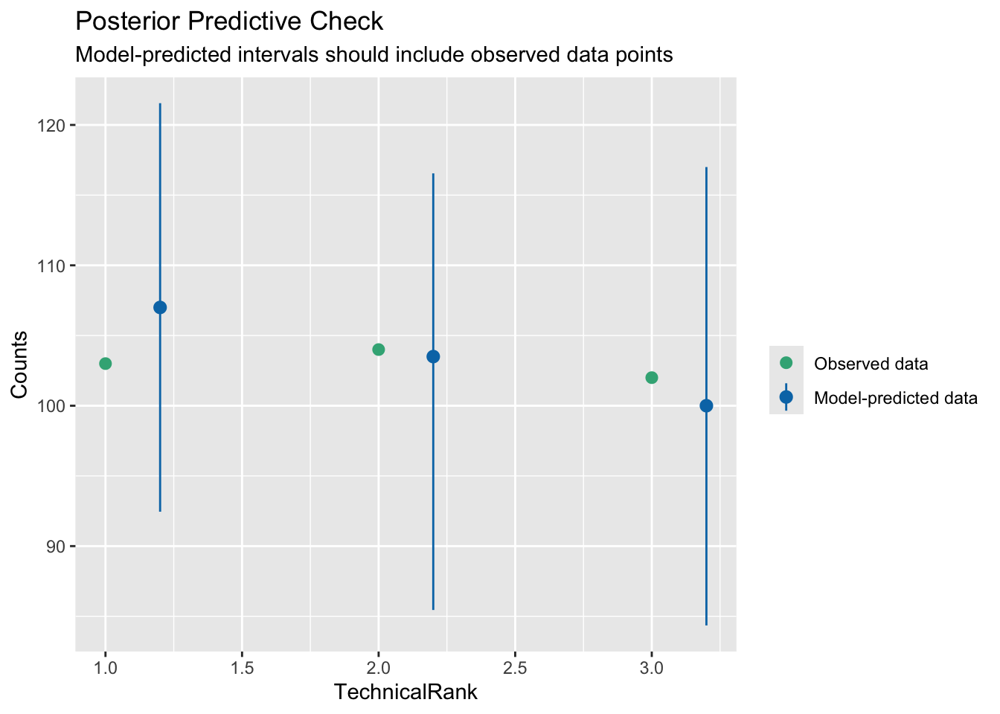

Code
library(tidyverse)
library(broom)
library(performance)
library(ordinal) #clm
library(car) # anova
library(ggeffects) # viz
library(gofcat) # brant
library(brms)
library(emmeans) # contrasts
library(knitr)
library(effects)If you are fitting a model, display the model output in a neatly formatted table. (The tidy and kable functions can help!)
If you are creating a plot, use clear labels for all axes, titles, etc.
If you are using Github, don’t forget to commit and push your work to to it regularly, at least after each exercise. Write short and informative commit messages. Else, if you are submitting on Canvas, make sure that the version you submit is the latest, and that it runs/knits without any errors.
When you’re done, we should be able to knit the final version of the QMD in your GitHub as a HTML.
The data for this week’s lab is taken from the Great British Bake-off (GBBO, https://bakeoff.netlify.app/). In this lab you will be looking at Gender and Age as a predictor of technical rank. For this exercise, we will only be looking at those who were in top 3 of technical.
In the GBBO, the bakers are usually provided with a list of ingredients and basic instructions, but they may not have access to specific measurements or details on how to prepare the ingredients. The judges evaluate the bakers’ finished products based on factors such as appearance, texture, and flavor, but also compare the bakers’ results to a standard version of the recipe that has been prepared in advance by the judges or a baking expert.
The dataset contains 3 variables:
Gender: M = MALE, F = FEMALE
Age: Age of baker
Technical Rank: Rank in technical (1,2,3)
library(tidyverse)
library(broom)
library(performance)
library(ordinal) #clm
library(car) # anova
library(ggeffects) # viz
library(gofcat) # brant
library(brms)
library(emmeans) # contrasts
library(knitr)
library(effects)gbbo <- read_csv("https://raw.githubusercontent.com/suyoghc/PSY-504_Spring-2025/refs/heads/main/Ordinal%20Regression/data/GBBO.csv")
# Enter code to filter. Think about the data type that would be relevant for Rank
gb <- gbbo %>% filter(`Technical Rank` %in% c(1, 2, 3))Gender and Age# Gender
gb %>%
group_by(Gender, `Technical Rank`) %>%
summarise(count = n(), .groups = "drop") %>%
group_by(Gender) %>%
mutate(percentage = count / sum(count) * 100) %>%
ggplot(aes(x = factor(`Technical Rank`, levels = c(1,2,3)), y = percentage, fill = Gender)) +
geom_bar(stat = "identity", position = "dodge") +
labs(title = "% of Bakers by Technical Rank and Gender",
x = "Technical Rank",
y = "%") +
theme_minimal()
::: {.cell}
```{.r .cell-code}
c(min(gb$Age), max(gb$Age))
```
::: {.cell-output .cell-output-stdout}
```
[1] 17 66
```
:::
:::# Plot percentage of bakers in each rank by Age group
gb %>%
mutate(AgeGroup = cut(Age, breaks = c(10, 20, 30, 40, 50, 60, 70),
labels = c("10-20", "21-30", "31-40", "41-50", "51-60", "61-70"))) %>%
group_by(AgeGroup, `Technical Rank`) %>%
summarise(count = n(), .groups = "drop") %>%
group_by(AgeGroup) %>%
mutate(percentage = count / sum(count) * 100) %>%
ggplot(aes(x = factor(`Technical Rank`, levels = c(1,2,3)), y = percentage, fill = AgeGroup)) +
geom_bar(stat = "identity", position = "dodge") +
labs(title = "% of Bakers by Technical Rank and Age Group",
x = "Technical Rank",
y = "%") +
theme_minimal()
If you haven’t already, convert the outcome variable to an ordered factor. What does the order here represent?
gb <- gb %>%
mutate(`Technical Rank` = factor(`Technical Rank`, levels = c(1, 2, 3), ordered = TRUE))
gb <- gb %>%
rename(TechnicalRank = `Technical Rank`)Convert input variables to categorical factors as appropriate.
gb <- gb %>%
mutate(Gender = factor(Gender))
gb <- gb %>%
mutate(AgeGroup = cut(Age, breaks = c(10, 20, 30, 40, 50, 60, 70),
labels = c("10-20", "21-30", "31-40", "41-50", "51-60", "61-70")))
gb <- gb %>%
mutate(AgeGroup = factor(AgeGroup, levels = c("10-20", "21-30", "31-40", "41-50", "51-60", "61-70"), ordered = TRUE))Run a ordinal logistic regression model against all relevant input variables. Interpret the effects for Gender, Age and Gender*Age (even if they are non-significant).
# Fit ordinal logistic regression model with interaction
model <- clm(`TechnicalRank` ~ Gender * AgeGroup, data = gb)
# Summary of results
summary(model)formula: TechnicalRank ~ Gender * AgeGroup
data: gb
link threshold nobs logLik AIC niter max.grad cond.H
logit flexible 309 -336.25 698.51 3(0) 4.79e-08 1.5e+02
Coefficients:
Estimate Std. Error z value Pr(>|z|)
GenderM 0.4258889 0.2760282 1.543 0.123
AgeGroup.L -0.8131945 0.5175910 -1.571 0.116
AgeGroup.Q -0.0543235 0.4511328 -0.120 0.904
AgeGroup.C 0.0235687 0.4870448 0.048 0.961
AgeGroup^4 0.1525125 0.4653856 0.328 0.743
AgeGroup^5 -0.0002774 0.3549649 -0.001 0.999
GenderM:AgeGroup.L 1.2384302 0.7812882 1.585 0.113
GenderM:AgeGroup.Q -0.1792456 0.6928953 -0.259 0.796
GenderM:AgeGroup.C -0.6652193 0.7046513 -0.944 0.345
GenderM:AgeGroup^4 -0.5504877 0.6569129 -0.838 0.402
GenderM:AgeGroup^5 -0.2378061 0.5126122 -0.464 0.643
Threshold coefficients:
Estimate Std. Error z value
1|2 -0.4887 0.1945 -2.513
2|3 0.9352 0.1999 4.678Test if the interaction is warranted
#Hint: You need to create two models with clm(); one with interaction and one without. #Then you compare them using the anova test using anova()
::: {.cell}
```{.r .cell-code}
model_no_int <- clm(TechnicalRank ~ Gender + AgeGroup, data = gb)
model_int <- clm(TechnicalRank ~ Gender * AgeGroup, data = gb)
anova(model_no_int, model_int)
```
::: {.cell-output .cell-output-stdout}
```
Likelihood ratio tests of cumulative link models:
formula: link: threshold:
model_no_int TechnicalRank ~ Gender + AgeGroup logit flexible
model_int TechnicalRank ~ Gender * AgeGroup logit flexible
no.par AIC logLik LR.stat df Pr(>Chisq)
model_no_int 8 692.73 -338.37
model_int 13 698.51 -336.25 4.2215 5 0.518
```
:::
:::Use ggemmeans to create a figure showing the interaction between Gender and Age as a function of rank. Plot predicted probabilities from the model.
# Compute predicted probabilities
em <- ggemmeans(model, terms = c("AgeGroup", "Gender"))
em_df <- as.data.frame(em)
# Age Group
ggplot(em_df, aes(x = response.level, y = predicted, fill = x)) +
geom_bar(stat = "identity", position = "dodge") +
labs(
title = "Effect of Age Group on Technical Rank",
x = "Technical Rank",
y = "Predicted Probability",
fill = "Age Group"
) +
theme_minimal()
# Gender
ggplot(em_df, aes(x = response.level, y = predicted, fill = group)) +
geom_bar(stat = "identity", position = "dodge") +
labs(
title = "Effect of Gender on Technical Rank",
x = "Technical Rank",
y = "Predicted Probability",
fill = "Gender"
) +
theme_minimal()
summary(gb) Gender Age TechnicalRank AgeGroup
F:173 Min. :17.00 1:103 10-20:35
M:136 1st Qu.:27.00 2:104 21-30:95
Median :31.00 3:102 31-40:94
Mean :34.54 41-50:50
3rd Qu.:41.00 51-60:17
Max. :66.00 61-70:18 ols_clm = MASS::polr(TechnicalRank~Gender*Age, data=gb, Hess = TRUE)
ggeffect(ols_clm, c("Age[all]", "Gender"), latent=TRUE) %>% plot()
Use the Brant test to support or reject the hypothesis that the proportional odds assumption holds for your simplified model.
brant.test(ols_clm)
Brant Test:
chi-sq df pr(>chi)
Omnibus 1.295 3 0.73
GenderM 0.585 1 0.44
Age 0.065 1 0.80
GenderM:Age 0.924 1 0.34
H0: Proportional odds assumption holdsbrmsBelow is a model implementation using the brms package. We will just use the default priors for this. The exercise is to run this code and note your observations. What are salient differences you observe in how the model fitting takes place With respect to the results, how do you compare the results of the model you fit with clm and the one you fit with brms?
It is very similar as what we have from CLM.
ols2_brm = brm(TechnicalRank ~ Gender*Age, data=gb, family = cumulative, cores = 4,chains = 4)The conditional_effects function is used to plot predicted probabilities by Gender and Age across each rank.
::: {.cell}
conditional_effects(ols2_brm, categorical = T)::: {.cell-output-display}  :::
::: {.cell-output-display}  ::: :::
check_predictions from the easystats performance package is used for examining model fit (i.e., does the data fit the model being used?). Run the below code. What do you think?
It is really good and capture to real data.
check_predictions(ols2_brm)